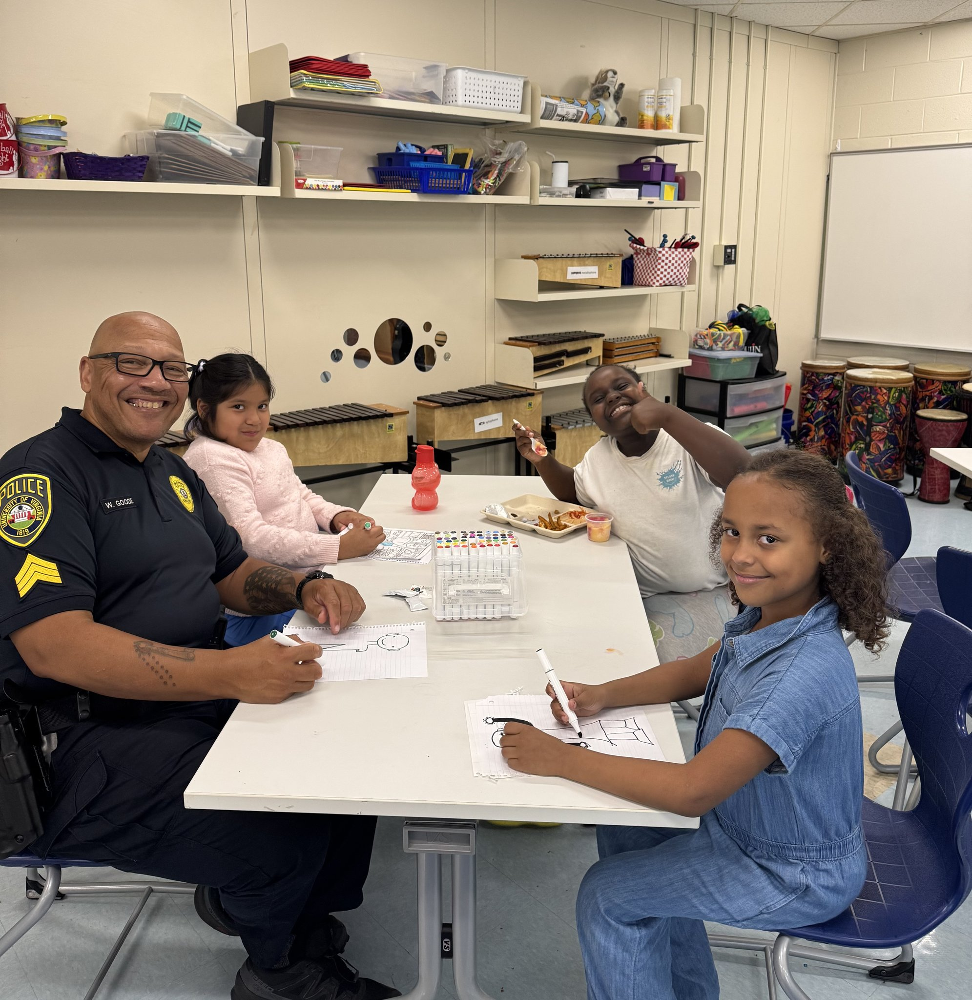
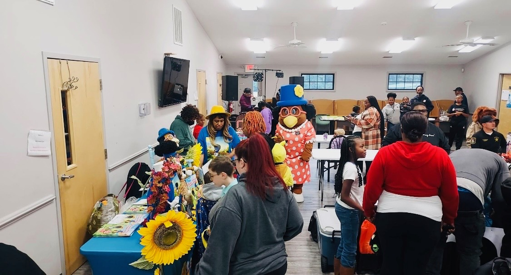
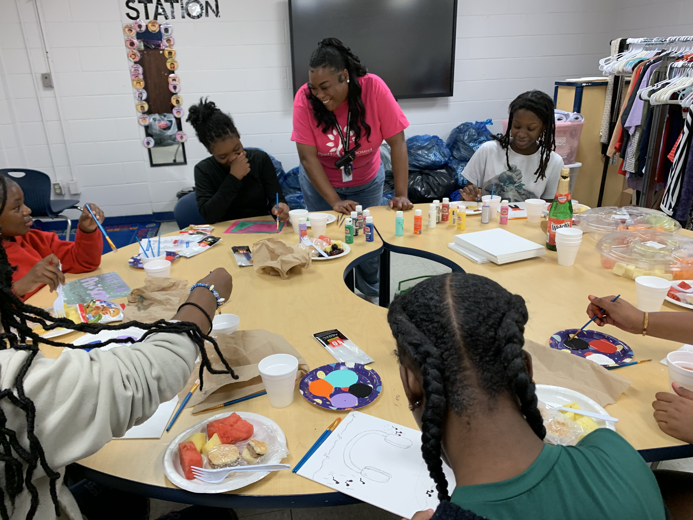

- Cohort:
- 2
- Treatment:
- CIS Affiliates (combined section)
Communities In Schools Affiliates
Cohort 2
Five Communities In Schools (CIS) affiliates are participating in the Virginia Community Schools Initiative as part of Cohort 2, serving as valued partners in this work. Through their established presence in schools and communities, CIS affiliates help coordinate supports, strengthen partnerships, and connect students and families to needed resources. Their involvement enhances the implementation of community schools by promoting aligned, student-centered systems of support.
CIS Hampton Roads
Single Photo Block
![[ALT TEXT TO BE WRITTEN]](vcsi-cis-hampton-roads-students-mentor-playground.jpeg)
Hampton City's Lindsay Middle School and Virginia Beach's Newtown Elementary are partnering with Communities in Schools (CIS) of Hampton Roads to address chronic absenteeism and provide broader student support. At Lindsay Middle, 48 students are receiving attendance support through Attendance Avengers, a morning check-in incentive program. They also receive academic intervention through lunchtime small reading groups and tutoring in language arts, reading, and math. The school has built calming spaces, and is providing peer mentoring for students, a food pantry for families, and trauma-informed professional development for staff. At mid-year, 88% of students receiving intensive academic interventions had improved their grades.
At Newtown Elementary in Virginia Beach, teachers across six classrooms are using candy jar attendance calendars, in which students add a piece of candy for each day they are present. Two community events, the Tri-Campus Tailgate and Donuts with Grownups, drew nearly 250 students and parents this year. Within the first six weeks of the school year, chronic absenteeism at Newtown dropped from 19% to 12.3%. Both schools share a goal of 75% attendance improvement among supported students by year's end.
By the Numbers
Engagement Across Hampton Roads This Fall
10 Tier 1 Supports | 1,061 Event Attendees | 19 Partners
Community Partners
- Crescent Counseling
- Music Theory Studios
- Sentara
- Regal
- Hampton University Recruitment Team
- Dollar Tree
- The Patriot Center
- Beauty Outlet of Norfolk
- Girl Scouts of the Colonial Coast
- The Mount Church at Virginia Beach
- Starbucks (Northampton)
- Krispy Kreme
- Applebees (VB Blvd)
CIS NOVA
Albemarle County is partnering with Communities in Schools (CIS) of NOVA to build family engagement at Greer Elementary and Journey Middle School. At Greer, the bilingual site coordinator is filling the school's family liaison role on the school attendance team and meeting with families in community locations, using their home language to share information. She also runs a Community Corner program that provides food, clothing, and hygiene supplies to families. At Journey Middle, the coordinator is rebuilding family programming to ensure a welcoming environment for families, anchored by events like a SOL-ebration Party celebrating student achievement after testing and a Black History Month gathering. Social and emotional learning outcomes have improved for 94% of participating students at Journey.
By the Numbers
Engagement Across CIS NOVA This Fall
36 School Events | 2,601 Attendees | 18 Community Partners
Single Photo Block

Community partners are bringing enrichment directly into the classroom at Greer Elementary, where the site coordinator's outreach has connected the school with local organizations. A second-grader told the coordinator, "I can be myself and you'll listen."
Voices From the Community
"Communities in Schools has introduced a number of creative arts related activities and programming at a time when there are few outlets for the arts and creative expression. The students are responding very positively."
— Journey Middle School Leadership
Community Partners
- VA Literacy Partners
- BAMA Works Foundation
- Boys & Girls Club
- MVMT Church
- Blue Ridge Area Food Bank
CIS Richmond
Single Photo Block
![[ALT TEXT TO BE WRITTEN]](vcsi-cis-richmond-classroom-presentation-students.jpg)
Two Richmond City schools, Henry Marsh Elementary and J.L. Francis Elementary, are partnering with Communities in Schools (CIS) of Richmond to implement activities aligned with the Community Schools grant. The division has included a Community Schools voice in the collaborative teams that support student resources, with the work focusing on academics, attendance, behavior, and social-emotional learning. Across the two schools, more than 40 community partners are supporting the work. At Henry Marsh, a Big Buddy, Little Buddy program matches elementary students with high schoolers who visit monthly for mentoring. At J.L. Francis, a partnership with VCU chemistry students brings weekly STEM modeling into the school.
By the Numbers
Engagement Reach Across CIS Richmond
6 Community Events | 1,365 Total Attendees | 14 Community Partnerships
Voices From the Community
"If you speak to people about how you are feeling you can change things. I feel like I can share my feelings because Ms. Johnson makes me feel empowered. I know she's behind me."
— Student, Henry Marsh Elementary
Community Partners
- FeedMore
- Sylvia's Sisters
- Uprop Threads
- Challenge Discovery Project
- Child Savers
- YWCA
CIS Southside
Single Photo Block

Greensville County is partnering with Communities In Schools to build wraparound support across three schools at different stages of implementation. Greensville County High School anchors the work, with more than 20 active community partnerships providing mentoring and family engagement. Wyatt Middle School is layering in CTE pathways, substance use prevention, and work-based learning opportunities. Greensville Elementary, the newest site, is in early implementation and has launched counseling services through a partnership with From Start 2 Finish Counseling Services.
Nearly all students across the three schools qualify for free or reduced meals, and the division has built its supports around that reality. This fall, the program distributed 32 food vouchers and 19 laundry vouchers to families facing economic hardship, helping reduce barriers to attendance. Translation and interpretation services help families across the community fully participate in their children's education, and events like Trunk or Treat and financial literacy workshops bring families into the school community while building long-term stability.
Voices From the Community
"I've noticed a big change in my child's attitude towards school. They're excited to share what they learned each day, and the communication with their teachers has never been better."
— Parent, Greensville Elementary School
Community Partners
- Chick-fil-A Emporia
- From Start 2 Finish Counseling Services
- Local veterans organizations
- Toys for Tots
- Washington Park Association
CIS Tri-Cities
Single Photo Block

Four Petersburg City schools are partnering with Communities in Schools (CIS) of the Tri-Cities to provide coordinated support for students and families. Each school operates a food pantry, clothing closet, and school supply program. Vernon Johns Middle provides targeted resources to families experiencing homelessness, and Blandford Academy offers a trusted, judgment-free space for students and families to share challenges. Pleasants Lane Elementary hosted nine community events drawing 471 attendees this year, the highest engagement in the division. At Petersburg High, students are connecting with mentors through Alpha Phi Alpha at Virginia State University, a historically Black Greek organization at a nearby HBCU.
By the Numbers
Engagement Across Petersburg This Fall
21 Events | 922 Attendees | 21 Partnerships
Voices From the Community
"Students and families feel that [the program] is a safe place for them to communicate their core needs and obstacles they face daily. They look to us to help provide direction, relief, and resolution. They trust us to have their best interest and to listen to them to help the best we are able."
— Melissa Meadows, Communities in Schools of the Tri-Cities
Community Partners
- Alpha Phi Alpha (VSU)
- FeedMore
- Good Shepherd Baptist Church
- St. Stephen's Church
- Pretty Purposed
- Saint Joseph Villa
- Scouts of America
- Dignity Grows
- CHHASM
- Walmart
- Amazon
- Bon Secours